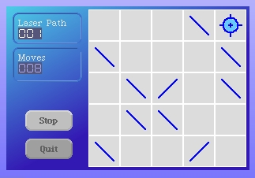
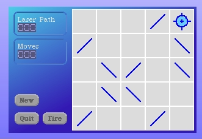

We're going to re-factor some of our update code. Begin by creating a new instance method as follows.
updateGameBoardAndControls
self drawGameBoard.
self updateFireButtonLabel.
self updateCounters.
self changed
Modify our #mouseUp:forMorph:cell: instance method to use this new update code.
mouseUp: evt forMorph: aSketchMorph cell: aCell
| renderer pixelPositionWithinBoard cellForRedraw |
renderer := CellRenderer rendererFor: aCell grid: self grid form: self boardForm.
pixelPositionWithinBoard := self boardRelativePositionFor: evt.
cellForRedraw := renderer mouseUpWithinBoardOffset: pixelPositionWithinBoard.
self redrawCell: cellForRedraw.
self incrementMoves.
self updateGameBoardAndControls
Open up a new LaserGame morph to check how we're doing.
Next, we're going to add a "New Game" button. The existing control panel looks crowded for a third button. The existing ones do not need to be so large. I'd like to make them both smaller and put them together horizontally in the same row. Then we could add a second row with a new buttton.
While we're in here changing around our button code, we should revisit how we have the "Quit" button coded. If we make the button smaller and maybe a little closer to the "Fire" button to make more room on the control panel, we could find the user accidently hitting the "Quit" button sometimes. Modify the #quitGame method to confirm the user's choice before actually exiting the game.
quitGame
(self confirm: 'Are you sure you want to quit?') ifTrue: [self delete]
The code to layout the buttons is only going to get messier to read if we add a 2nd row and third button. Let's refactor a bit here too. Add the following instance method to calclulate the layout-frame for a control panel button if we specify the row and column for it.
buttonLayoutFrameForRow: fromBottom column: fromLeft
| buttonHeight buttonWidth xOffset xOrigin yOrigin xCorner yCorner yOffset |
buttonHeight := 20.
buttonWidth := 40.
xOffset := (self panelWidth - (2 * buttonWidth)) // 3.
yOffset := 10.
xOrigin := xOffset * fromLeft.
xOrigin := xOrigin + ((fromLeft - 1) * buttonWidth).
yOrigin := yOffset * fromBottom.
yOrigin := yOrigin + (fromBottom * buttonHeight).
yOrigin := yOrigin negated.
xCorner := xOrigin + buttonWidth.
yCorner := yOrigin + buttonHeight.
^LayoutFrame
fractions: (0 @ 1 corner: 0 @ 1)
offsets: (xOrigin@yOrigin corner: xCorner@yCorner)
We need to create the "New Game" button.
makeNewGameButton
^self makeButton: 'New' action: #newGame state: nil
Next we modify the #addButtonsToPanel: method to use the new layout technique for all our control panel buttons, including the new one.
addButtonsToPanel: panel
| layout |
layout := self buttonLayoutFrameForRow: 1 column: 1.
panel addMorph: self makeQuitGameButton fullFrame: layout.
layout := self buttonLayoutFrameForRow: 1 column: 2.
panel addMorph: self makeFireLaserButton fullFrame: layout.
layout := self buttonLayoutFrameForRow: 2 column: 1.
panel addMorph: self makeNewGameButton fullFrame: layout.
^panel
For now, just add a stub method to handle the new game request.
newGame
We have a little more refactoring to do. Add a new instance method on LaserGame.
initializeDirty
self dirty: Dictionary new
We're going to use that in the initialization of "dirty" and when we create a new game. Here's the modified #dirty method.
dirty
dirty isNil ifTrue: [self initializeDirty].
^dirty
Open up a new LaserGame morph to check how we're doing.
